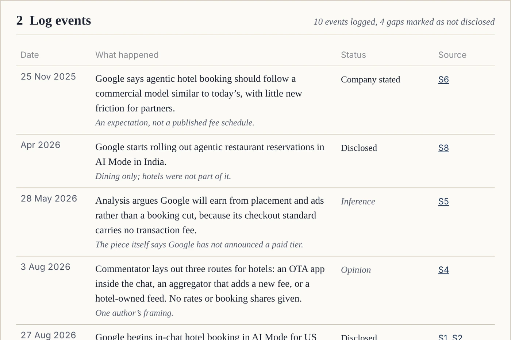
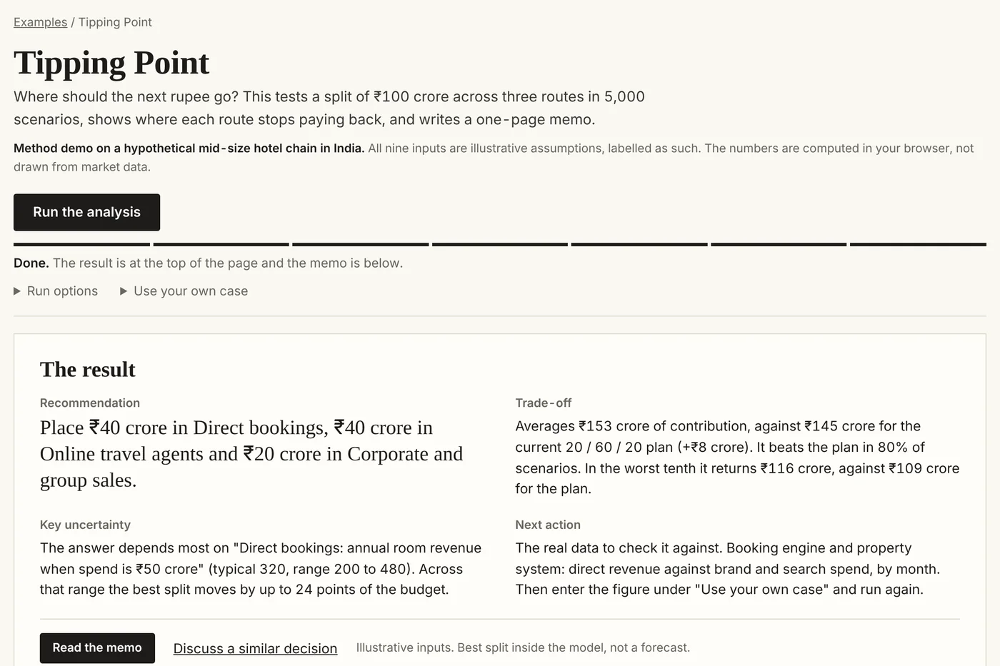

How It Works
You define a job once. A configured workflow runs it whenever you ask, and a person reviews what needs judgement.
Define the job
Write down the question, the scope and the output you want. A person helps you get the brief right, because everything else follows from it.
Set the evidence and the rules
Name the sources to watch and send any documents or numbers. Each item is marked as a public source or your own data, and written rules say how strong the evidence has to be.
Configure and test
The first run is checked against what you expected, and the rules are adjusted until it is right. Nothing reaches you before that.
- A gap Logged, never filled in
- Release Only after a person approves
Run
The workflow records each item with a date, a source and a status, and shows a gap as a gap. Runs happen when you ask for them, and the same rules apply every time.

Review the result
A person checks the exceptions and anything with consequences. Then the result reaches you as a memo or update, and you make the decision.

Questions
What do I need to provide?
The job in a few sentences, the output you want, any rules that apply, and the documents or numbers involved. Setup takes a conversation or two and a first run that you check.
Which sources can it use?
Public web sources that are selected with you, documents and spreadsheets you send, and numbers you enter. No connection to your internal systems has been built. If a job needs one, it is scoped and priced on its own, and I will say so before you commit.
What happens to our internal data?
We agree in writing what I receive, where it is processed and when it is deleted, before anything is shared. I ask for the least data that will do the job, which for sales or channel figures usually means monthly totals with no personal data. I have no standard retention period yet, so we set one for each job. What you type into the demo and the examples on this site stays in your browser.
Does it run on a schedule?
Runs happen on demand. A regular rhythm, such as monthly, can be agreed, and I run it for you. There is no self-service scheduler and no live monitoring today.
What if the evidence is thin or a source is unavailable?
The workflow says so. A gap is logged with a date and shown in the output, and a question with weak evidence is rated that way: inference only, or nothing disclosed yet. A source that cannot be read is recorded as unavailable.
How do I know it is not making things up?
Every item carries a date and a source, the rules are written out, and a reviewer approves each result. Where a live build uses a language model to read text, each quote it extracts is checked against the fetched text. The examples here fetch nothing, so you cannot try that check on this site. You can also ask for a back-test on a past period where you know what happened.
Does it learn from corrections?
The workflows are designed so that a reviewer’s corrections are logged and used to adjust the rules. The demo and the examples on this site do not learn. They run fixed rules on fixed examples.
Does it replace our analyst?
It covers gathering, dating, scoring, testing and drafting for a defined job. The reading of what matters, and the decision, stay with your team.
How do I receive the results?
As a PDF or an email, or by approving items by email, or by files I hand over for your own systems. Running inside your own AI tools is possible after your security review.